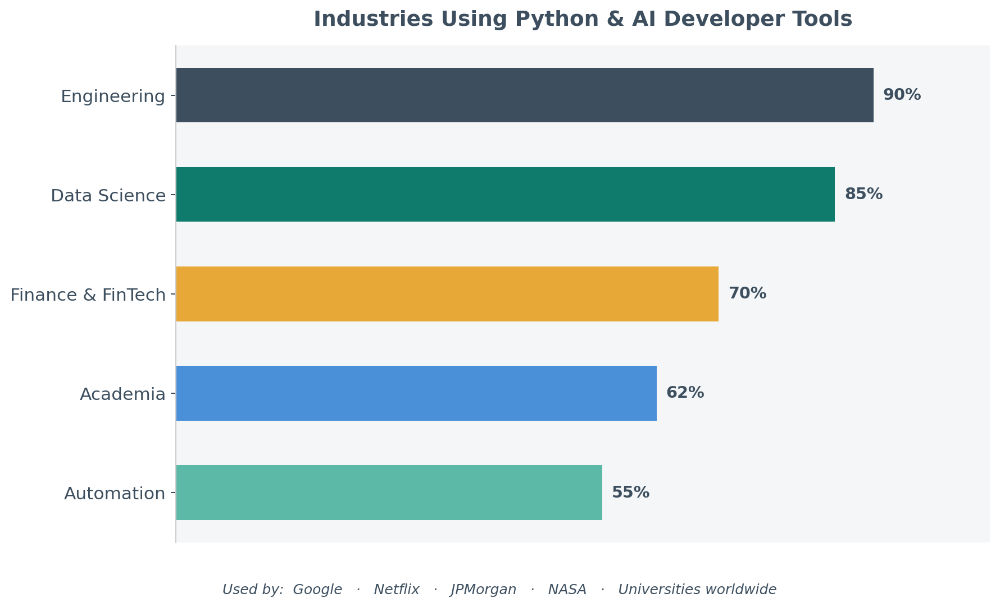
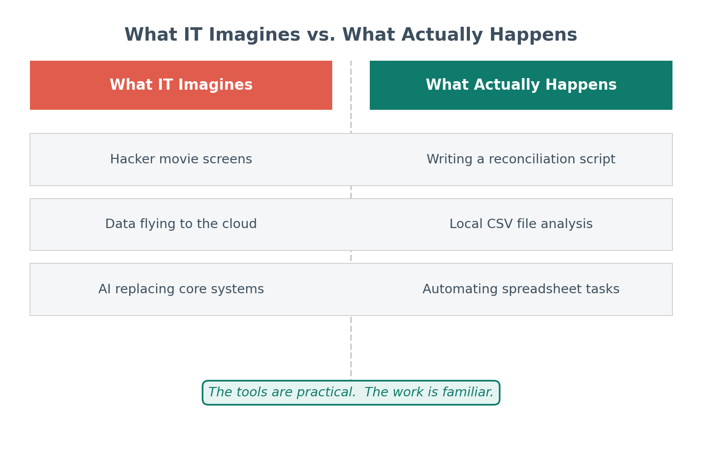
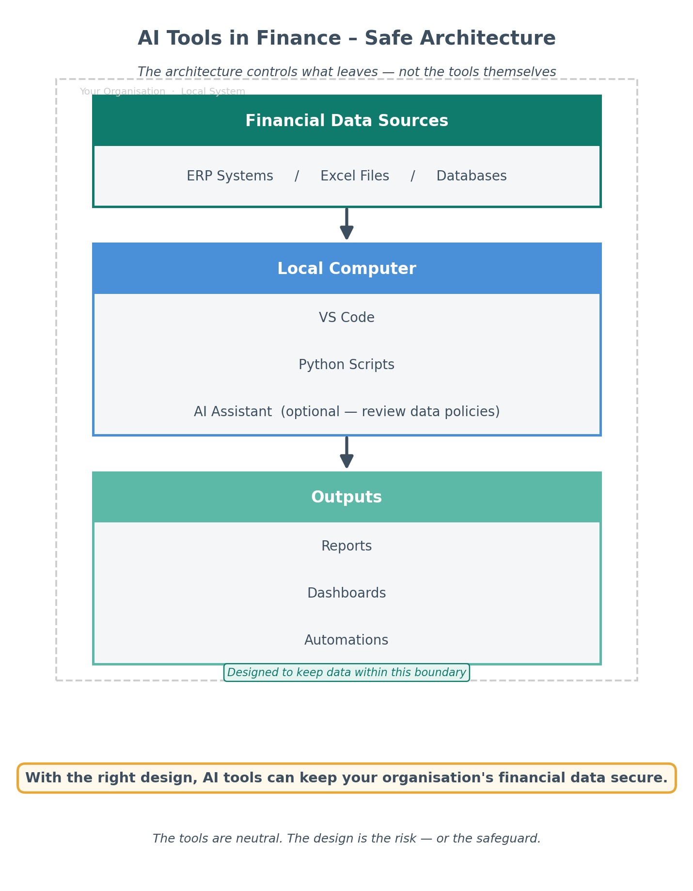
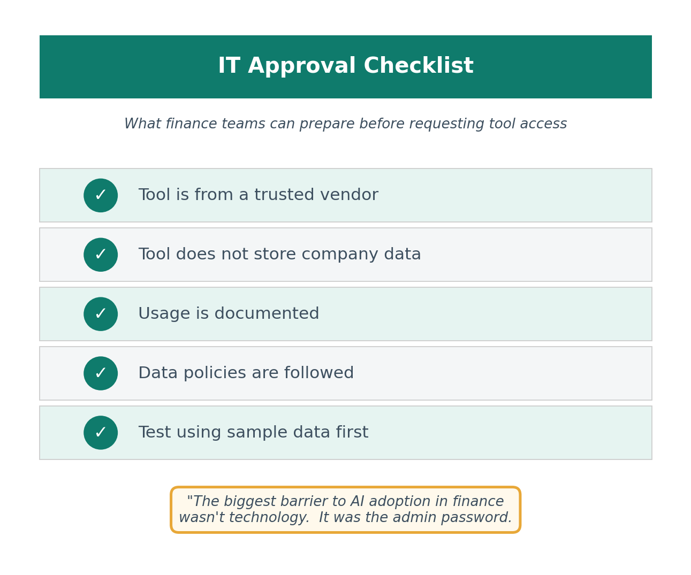

Getting the Right Tools Installed: A Safe Starting Point for Accounting Teams
A practical guide for finance professionals working with IT in secure corporate environments
By Svetlana Toohey Published March 2026
I thought learning Python would be the hard part.
It turns out the harder part was getting the tools installed in the first place.
If you work in accounting or finance inside a corporate environment, you probably know what I mean. The moment you start exploring automation or AI-assisted workflows, you quickly realize something surprising:
Most of the tools require administrator permissions to install.
Suddenly you find yourself asking IT for approval to install things like:
- Python
- Visual Studio Code
- AI assistants such as Copilot, Claude, or GPT-based tools
And the first reaction is often something like:
"Why do you need this?"
or
"Is this secure?"
Those are fair questions. Finance teams work with sensitive information, and IT departments are responsible for protecting the organization's systems and data.
But the good news is that many of the tools used in modern analytics and automation are well-established, widely trusted, and already used in enterprise environments.
The challenge is usually not the tools themselves. The challenge is explaining how they will be used responsibly.
The Tools I Recommend to Get Started
When accounting teams begin exploring automation and AI, I usually recommend starting with a very simple toolkit.
These tools are not exotic or experimental. They are widely used across technology, analytics, and data science communities.
Visual Studio Code (VS Code)
Visual Studio Code is a lightweight development environment created and maintained by Microsoft.
It is one of the most widely used editors in the world for working with code, scripts, and structured data.
Finance teams often use it to:
- write small automation scripts
- analyze large datasets
- organize data workflows
- document processes
More information: https://code.visualstudio.com/
If you want beginner-friendly setup guidance, see Where to Start If You're Ready to Work With AI, then use the detailed checklist in the AI Getting Started Toolkit.
Python
Python is a programming language widely used for data analysis and automation.
In finance and accounting, Python can help with tasks such as:
- reconciling transactions
- analyzing large exports from ERP systems
- automating repetitive spreadsheet processes
- preparing data for dashboards or reports
Official website: https://www.python.org/
For practical installation steps in a finance context, reference Where to Start If You're Ready to Work With AI.
For a deeper dive into Python libraries for accounting and annotated code examples, see the AI Accounting Framework.
AI Assistants
AI assistants can help generate code, explain file structures, and draft documentation.
Many development tools now integrate AI assistants such as:
- GitHub Copilot
- Claude-based assistants
- GPT-based tools
These assistants can significantly speed up tasks such as:
- writing scripts
- documenting processes
- understanding messy datasets
It is important to understand that AI features may involve sending prompts or file context to cloud-based models for processing. For that reason, organizations should define clear internal guardrails for how these tools are used.
If you are evaluating assistant options by interface (browser, VS Code, API), see Ways to Use Claude: Choosing the Right Interface.

Figure 1: Python and AI developer tools are not experimental. They are widely used across engineering, data science, finance, and academia — and trusted by organizations including Google, Netflix, JPMorgan, and NASA.Why IT Often Pauses
When IT teams see requests for developer tools, they usually want to understand a few basic things:
- What does the software do?
- Who maintains it?
- How will it be used?
- Does it introduce security risk?
Those questions are not obstacles. They are part of responsible technology governance.
The easiest way to move forward is simply to be transparent about your intended use cases.
For example, you might explain that you want to explore automation for tasks like:
- bank reconciliations
- file structure documentation
- data cleaning for reports
- analysis of large exported datasets
These are practical improvements to existing workflows, not experimental system replacements.

Figure 2: The reality of how finance teams use these tools is far more practical than IT might expect.A Simple Starting Point: Begin With Safe Use Cases
When first adopting these tools, it helps to begin with very low-risk activities.
Examples include:
- working with sample or synthetic data
- documenting file structures
- building small automation scripts
- experimenting with non-sensitive datasets
This allows teams to learn how the tools work before using them on real financial information.
Starting small also helps build trust with IT teams and leadership.

Figure 3: A simple local-first architecture that helps teams keep financial data inside organizational boundaries.A Simple Message You Can Send to IT
If you are requesting installation of these tools, a short explanation like the one below can help.
Subject: Request to Install Tools for Finance Automation
Hi [IT Team],
I'm exploring ways to automate several finance workflows (such as reconciliations and data preparation) and would like to request installation of the following tools:
- Visual Studio Code
- Python
Both are widely used tools for data analysis and automation.
The initial goal is to experiment with small workflow improvements using sample or non-sensitive datasets.
If helpful, I'd be happy to walk through the intended use cases and answer any questions.
Thank you for your help.
Best regards, [Name]

Figure 4: A simple checklist finance teams can use to approach IT conversations with confidence.My Personal Experience
When I first started exploring automation and AI in finance, I assumed the biggest challenge would be learning the technology.
Instead, I discovered the real gatekeeper was much simpler.
The administrator password.
Once I explained to IT what the tools actually were and how they would be used, the conversation changed.
Instead of:
"Why do you need this?"
It became:
"Okay - show us what you're trying to build."
That's when real progress starts to happen.
What Comes Next on PythonMuse
Getting the tools installed is only the first step.
In the next PythonMuse articles, we will explore two topics that often come up right after that:
Using AI responsibly in accounting
Understanding when AI tools process information locally and when cloud models are involved, and how to avoid sending sensitive financial data where it doesn't belong.
Making AI workflows audit-friendly
Designing automation that is documented, reviewable, and easier to support during internal review or audit.
My goal with PythonMuse is not just to encourage adoption of new tools, but to help finance teams adopt them responsibly, one step at a time.
If you want to go from setup to execution, Your AI Co-Pilot for Accounting shows a full example analysis workflow using CSV files in VS Code.
Related: AI in Accounting Is Not the Wild West Anymore | Safe AI Data Workflows | Your AI Co-Pilot for Accounting | AI Governance for Controllers | AI Accounting Framework